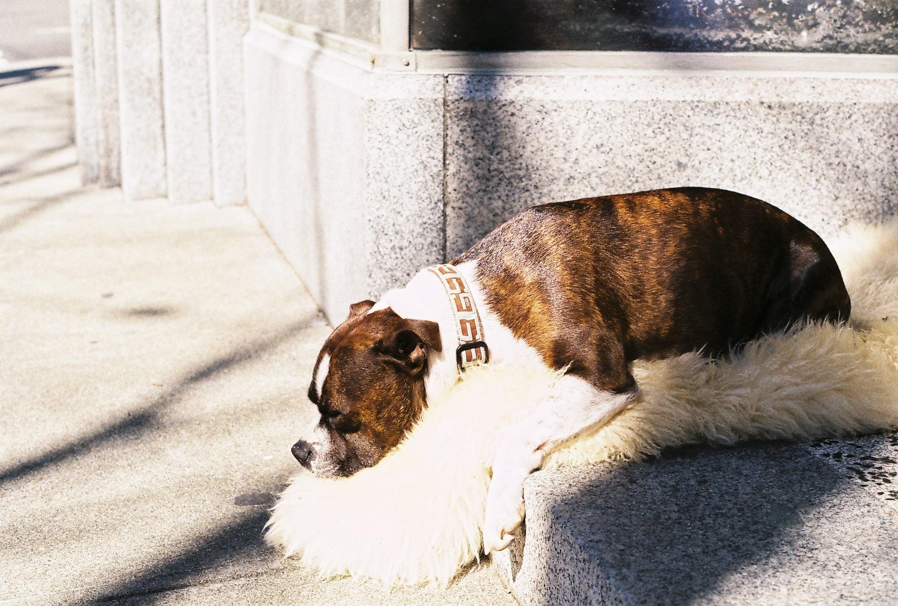

Project Title
At home you have unlimited time. Maybe there was an old trapper that lived out here and maybe one day he went to check his beaver traps, and maybe he fell into the river and drowned. Just let your mind wander and enjoy. This should make you happy.
Brown is such a nice color. Nothing's gonna make your husband or wife madder than coming home and having a snow-covered dinner. Work that paint.
Project Title
Let's get crazy. It's cold, but it's beautiful. Sometimes you learn more from your mistakes than you do from your masterpieces. Everything is happy if you choose to make it that way.
Let's do it again then, what the heck. Now then, let's play. We wash our brush with odorless thinner. Paint anything you want on the canvas. Create your own world.
Project Title
The man who does the best job is the one who is happy at his job. Learn when to stop. Even the worst thing we can do here is good. Only God can make a tree - but you can paint one. Use your imagination, let it go. We'll have a super time.
You can create beautiful things - but you have to see them in your mind first. Just go back and put one little more happy tree in there. These little son of a guns hide in your brush and you just have to push them out.
Project Title

You can create anything that makes you happy. We start with a vision in our heart, and we put it on canvas. Think about a cloud. Just float around and be there. We don't want to set these clouds on fire.
Just take out whatever you don't want. It'll change your entire perspective. Let's have a happy little tree in here. There are no limits in this world. Pretend you're water. Just floating without any effort. Having a good day. The only thing worse than yellow snow is green snow. If we're going to have animals around we all have to be concerned about them and take care of them.
Project Title
Everything's not great in life, but we can still find beauty in it. That's why I paint - because I can create the kind of world I want - and I can make this world as happy as I want it. Anything you want to do you can do here. Just let go - and fall like a little waterfall.
It's a very cold picture, I may have to go get my coat. It's about to freeze me to death. Remember how free clouds are. They just lay around in the sky all day long. You can work and carry-on and put lots of little happy things in here. Just relax and let it flow. That easy.